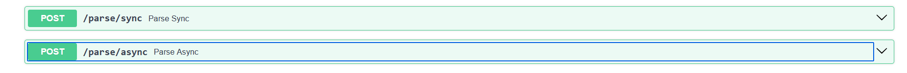
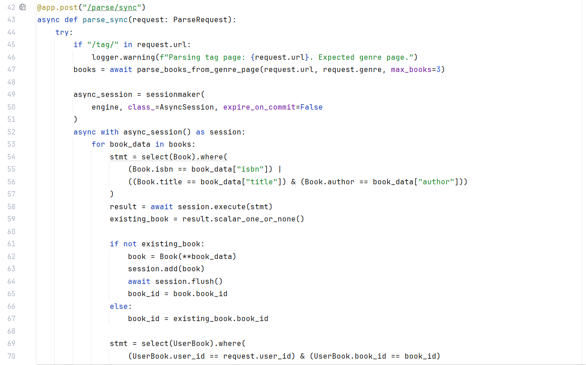
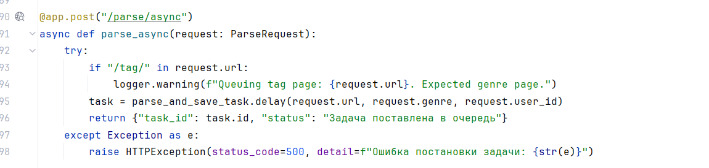
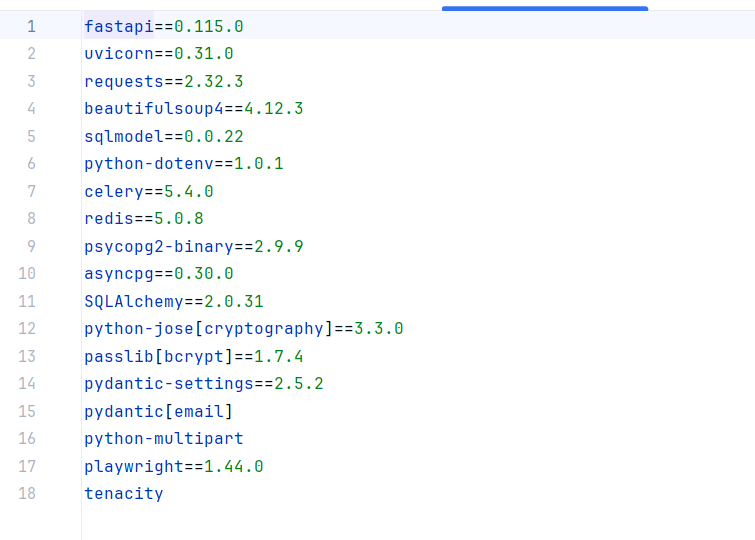
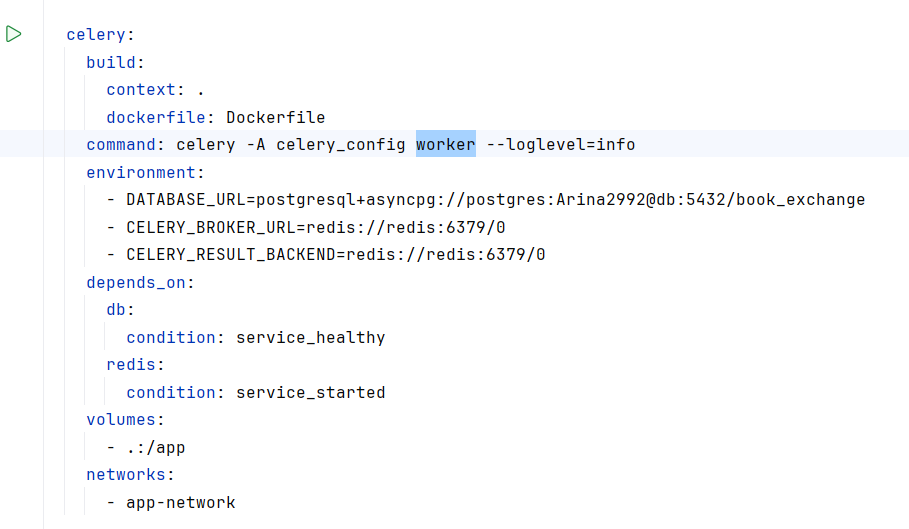
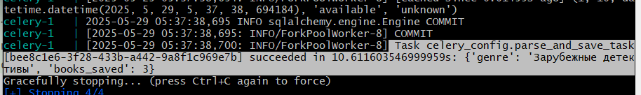
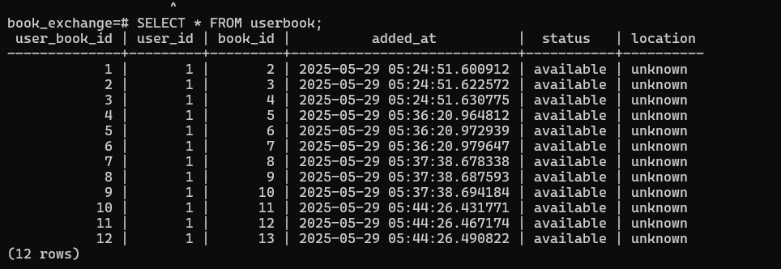

Лабораторная работа 3: Упаковка FastAPI приложения в Docker, Работа с источниками данных и Очереди
Цель: Научиться упаковывать FastAPI приложение в Docker, интегрировать парсер данных с базой данных и вызывать парсер через API и очередь.
1. Рализуйте возможность вызова парсера по http Для этого можно сделать отдельное приложение FastAPI для парсера или воспользоваться библиотекой socket или подобными.

2. Необходимо создать Dockerfile для упаковки FastAPI приложения и приложения с паресером. В Dockerfile указать базовый образ, установить необходимые зависимости, скопировать исходные файлы в контейнер и определить команду для запуска приложения.
код из файла Dockerfile:
FROM python:3.11-slim
WORKDIR /app
COPY requirements.txt .
RUN pip install --no-cache-dir -r requirements.txt
# Install Playwright dependencies
RUN apt-get update && apt-get install -y \
libnss3 \
libatk-bridge2.0-0 \
libx11-xcb1 \
libxcomposite1 \
libxrandr2 \
libxdamage1 \
libgbm1 \
libpango-1.0-0 \
libcairo2 \
libasound2 \
libcups2\
libxfixes3\
libxkbcommon0\
&& rm -rf /var/lib/apt/lists/*
RUN playwright install chromium
COPY . .
CMD ["uvicorn", "main:app", "--host", "0.0.0.0", "--port", "8000"]
3. Необходимо написать docker-compose.yml для управления оркестром сервисов, включающих FastAPI приложение, базу данных и парсер данных. Определите сервисы, укажите порты и зависимости между сервисами.
код из файла Dockerfile:
services:
fastapi:
build:
context: .
dockerfile: Dockerfile
ports:
- "8000:8000"
environment:
- DATABASE_URL=postgresql+asyncpg://postgres:postgres@db:5432/book_exchange
- CELERY_BROKER_URL=redis://redis:6379/0
- CELERY_RESULT_BACKEND=redis://redis:6379/0
depends_on:
db:
condition: service_healthy
redis:
condition: service_started
volumes:
- .:/app
networks:
- app-network
celery:
build:
context: .
dockerfile: Dockerfile
command: celery -A celery_config worker --loglevel=info
environment:
- DATABASE_URL=postgresql+asyncpg://postgres:postgres@db:5432/book_exchange
- CELERY_BROKER_URL=redis://redis:6379/0
- CELERY_RESULT_BACKEND=redis://redis:6379/0
depends_on:
db:
condition: service_healthy
redis:
condition: service_started
volumes:
- .:/app
networks:
- app-network
db:
image: postgres:13
environment:
- POSTGRES_USER=postgres
- POSTGRES_PASSWORD=postgres
- POSTGRES_DB=book_exchange
volumes:
- postgres_data:/var/lib/postgresql/data
healthcheck:
test: ["CMD-SHELL", "pg_isready -U postgres"]
interval: 5s
timeout: 5s
retries: 5
networks:
- app-network
redis:
image: redis:6
networks:
- app-network
volumes:
postgres_data:
networks:
app-network:
driver: bridge
4. Необходимо добавить в FastAPI приложение ендпоинт, который будет принимать запросы с URL для парсинга от клиента, отправлять запрос парсеру (запущенному в отдельном контейнере) и возвращать ответ с результатом клиенту.


5.Необходимо добавить зависимости для Celery и Redis в проект. Celery будет использоваться для обработки задач в фоне, а Redis будет выступать в роли брокера задач и хранилища результатов.

6. необходимо создать файл конфигурации для Celery. Определть задачу для парсинга URL, которая будет выполняться в фоновом режиме.
код из файла celery_config.py:
from celery import Celery
from base import parse_books_from_genre_page
from connection import create_tables, get_session
from models import Book, UserBook
from sqlalchemy.ext.asyncio import AsyncSession
from sqlalchemy import select
import asyncio
import logging
logging.basicConfig(level=logging.DEBUG, format='%(asctime)s - %(name)s - %(levelname)s - %(message)s')
logger = logging.getLogger(__name__)
app = Celery('parser', broker='redis://redis:6379/0', backend='redis://redis:6379/0')
app.conf.update(
task_serializer='json',
accept_content=['json'],
result_serializer='json',
timezone='UTC',
enable_utc=True,
)
async def save_books_to_db(books, user_id=1):
logger.debug(f"Saving {len(books)} books to database")
async for session in get_session():
for book_data in books:
try:
stmt = select(Book).where(
(Book.isbn == book_data["isbn"]) |
((Book.title == book_data["title"]) & (Book.author == book_data["author"]))
)
result = await session.execute(stmt)
existing_book = result.scalar_one_or_none()
if not existing_book:
book = Book(**book_data)
session.add(book)
await session.flush()
book_id = book.book_id
logger.debug(f"Added new book: {book.title}, ID: {book_id}")
else:
book_id = existing_book.book_id
logger.debug(f"Book already exists: {existing_book.title}, ID: {book_id}")
stmt = select(UserBook).where(
(UserBook.user_id == user_id) & (UserBook.book_id == book_id)
)
result = await session.execute(stmt)
existing_user_book = result.scalar_one_or_none()
if not existing_user_book:
user_book = UserBook(
user_id=user_id,
book_id=book_id,
status="available",
location="unknown"
)
session.add(user_book)
logger.debug(f"Added UserBook for user_id: {user_id}, book_id: {book_id}")
else:
logger.debug(f"UserBook already exists for user_id: {user_id}, book_id: {book_id}")
except Exception as e:
logger.error(f"Error saving book {book_data.get('title')}: {e}")
continue
async def run_parse_and_save(url, genre, user_id):
logger.debug(f"Starting task for URL: {url}, genre: {genre}")
books = await parse_books_from_genre_page(url, genre, max_books=3)
logger.debug(f"Parsed {len(books)} books")
try:
await create_tables()
logger.debug("Ensured tables exist before saving")
except Exception as e:
logger.error(f"Error ensuring tables: {e}")
raise
if books:
await save_books_to_db(books, user_id)
else:
logger.warning("No books parsed, skipping database save")
return {"genre": genre, "books_saved": len(books)}
@app.task
def parse_and_save_task(url, genre, user_id=1):
loop = asyncio.get_event_loop()
return loop.run_until_complete(run_parse_and_save(url, genre, user_id))
7. Необходимо добавить сервисы для Redis и Celery worker в docker-compose.yml. Определите зависимости между сервисами, чтобы обеспечить корректную работу оркестра.

8. Необходимо добавить в FastAPI приложение маршрут для асинхронного вызова парсера. Маршрут должен принимать запросы с URL для парсинга, ставить задачу в очередь с помощью Celery и возвращать ответ о начале выполнения задачи.,

